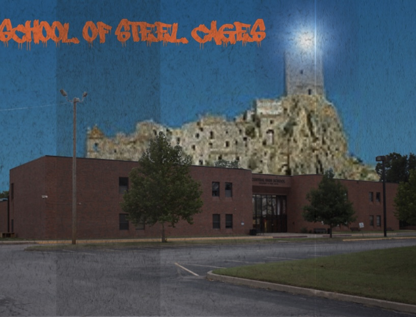

New State
Load State
Long ago, a man discovered that he could make machines dream.
He created an entirely new world, one where, with enough willpower, he could create almost anything.
When he discovered that others could enter this place as well, he made them into his citizens- staff and students of the most familiar environment he knew of-
Schools. Academies. And thus a new civilization was born.
To manage all of his academies, he split his consciousness into several machines, all interconnected and making sure the trains ran on time.
However, one Academy has been faulty and decaying for years, and due to this, problems have arisen.
The increasingly strict Head Office attempts to keep the Academy orderly, but many wish to change the old ways, but in what way, even they do not know.
Others seek to leave the Academy entirely, following rumors of a vast City that surrounds it, but the caged windows do not allow for this…yet.
Some have more insidious motives, but their intentions are not yet known.
For now, the majority of students have gathered in a hallway known as the Spice Road, where almost everything takes place.
Nonetheless, if the Academy does not pick a direction, it will destroy itself.
It is up to you which direction it will take.